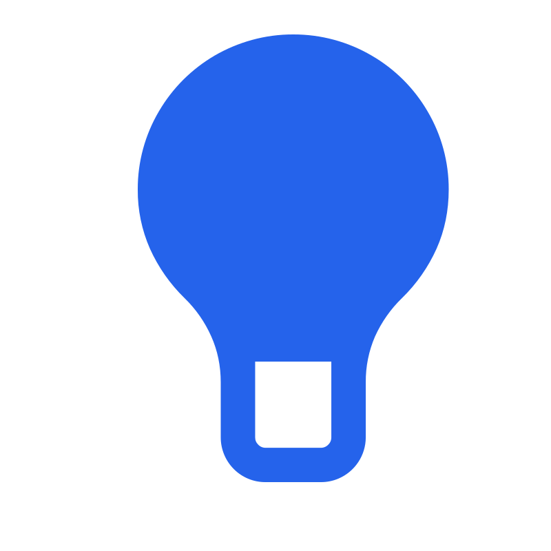
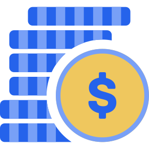
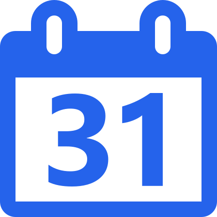
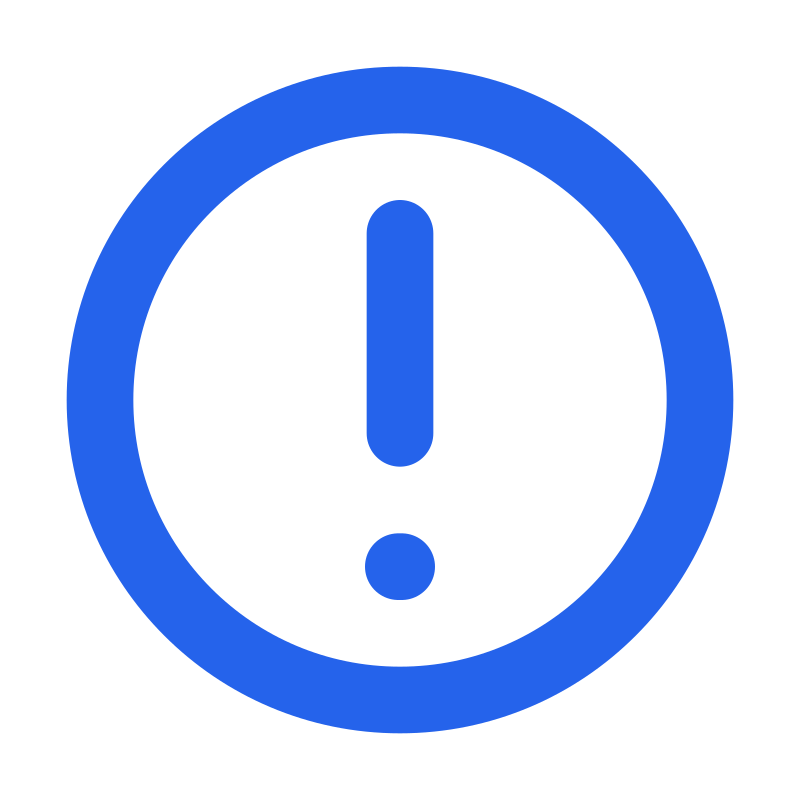

How to Build an Emergency Fund
Some things in life cannot be predicted or controlled. An emergency fund helps you stay prepared when the unexpected happens.

You never know what might happen.
Most of us plan our money around the things we already know are going to happen. We think about our bills, food, transportation, holidays, and other regular expenses.
But some of the most important expenses are the ones we never expected.
An injury, a serious problem at home, an unexpected financial situation, a pandemic, or a major event that affects many people can change your situation very quickly. There can also be smaller emergencies that you simply never thought would happen to you.

You do not need to know exactly what the emergency will be. The whole point is to have money available before you know that you will need it.
Your emergency fund does not need a fixed target.
Unlike many other savings goals, an emergency fund does not necessarily need a specific target amount.
There is no number that can guarantee you will have enough money for every possible emergency. You might need €200 for one situation, or much more for another.
That is why an emergency fund does not have to be about reaching one specific number and stopping. It is about always putting something aside so that you are better prepared for whatever might happen.
Your emergency fund can continue growing for as long as you want. You do not have to decide that it is finished.

Even a little can make a difference.
You might look at your finances and think that you do not have enough money to build an emergency fund.
But you do not need to start with a large amount. If you can put aside €20, €30, or even €10 each month, that is still money you did not have saved before.
Small amounts can become meaningful when you continue saving them month after month. What feels small today can make a much bigger difference years from now.

Your emergency fund does not need an end date.
A normal savings goal might have a start date and a planned finish date. An emergency fund does not have to work that way.
You can keep adding money to it month after month without deciding when you are going to stop.
You might save more during some months and less during others. The important thing is to keep putting something aside whenever you can.
You do not need to build your emergency fund quickly. You need to keep building it.
What should your emergency fund be used for?
An emergency fund should be reserved for situations that are important, serious, unexpected, and difficult to handle without extra money.
You cannot predict every situation that might require emergency money. That is exactly why keeping the fund available matters.

Do not use your emergency fund for non-emergencies.
One of the most important parts of having an emergency fund is knowing when not to use it.
It can be tempting to take money from it when you want to buy something expensive. But if the expense is not an emergency, taking the money reduces the protection you have built.
For example, buying a new phone is not an emergency. Even if your current phone breaks, you should think carefully about whether you genuinely need an immediate replacement and what alternatives are available.
If you want a new phone, a vacation, new clothes, or another planned purchase, it is better to create a separate savings goal for it instead of taking money from your emergency fund.
Using your emergency fund does not mean you failed.
If a real emergency happens and you need to use your savings, that is exactly what the money is there for.
The purpose of an emergency fund is not to look untouched forever. Its purpose is to give you financial support when something serious and unexpected happens.
If you need to use part of the fund, you can start building it again once the emergency has been handled.
Save a little, again and again.
Building an emergency fund is not about making one huge deposit. It is about creating a habit of putting something aside whenever you can.
There is no finish line. Every deposit makes your financial safety net a little stronger.
You might not notice a huge difference after one month. But after a year, several years, or even longer, those small deposits can become a meaningful amount of money.
Save more when you can.
Your ability to save will probably change throughout your life. There may be months when you can save more and months when you can only put aside a small amount.
That is okay. Your emergency fund does not need to grow at the same speed every month.
When you have more money available, you can put more into your emergency fund. When you have less, save what you reasonably can. The important part is to keep the habit alive.
Be prepared for what you cannot predict.
You cannot predict every emergency that life can bring.
Your emergency fund does not need a fixed target.
You do not need an end date for your emergency fund.
Even small amounts can become meaningful over time.
Keep emergency savings for important and unexpected situations.
Do not use emergency savings for planned purchases.
If you use the fund, start building it again.
Consistency can make a big difference over time.
Building an emergency fund does not have to be hard.
Start putting something aside, track your savings, and keep building your emergency fund over time with RealSavings Tracker. It is free to use and gives you a simple way to keep your savings organized.
Start Saving for Free